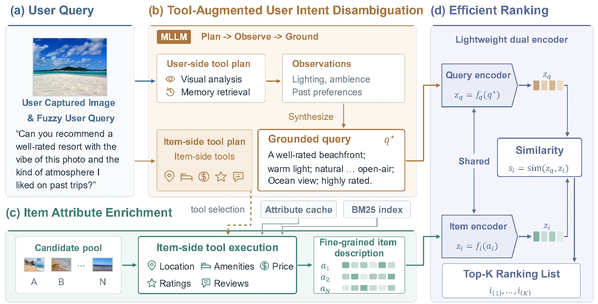

Recover intent
Visual analysis reveals cues such as color and ambience. Episodic and semantic memories recover the user’s experiences and longer-term preferences.
NeurIPS 2026
A photo. A vague request.
A recommendation grounded in evidence.

The idea
As intelligent personal assistants are increasingly deployed in real-world environments, recommendations move from passive preference matching to grounding user intent from underspecified multimodal evidence. In these settings, users often provide only a reference image and a fuzzy natural-language query, leaving crucial visual attributes, personalized preferences, and item-side constraints implicit. Existing recommenders either rely on historical interactions enriched with multimodal item features or presuppose fully specified textual requests, which are insufficient to resolve such queries for accurate item matching.
To bridge this gap, we present IntentLens, a tool-augmented recommendation framework that grounds underspecified multimodal queries into query-relevant evidence before user-item matching. IntentLens adopts a ground-then-rank design: a shared multimodal LLM orchestrates visual, user-memory, and item-attribute tools to (i) recover latent user intent from the image and language query, and (ii) enrich each candidate with fine-grained, query-conditioned evidence; a lightweight ranker then scores candidates over the grounded representations. To support this new setting, we further construct two benchmarks with underspecified multimodal queries, GoogleReview-MMTool and Yelp-MMTool. Comprehensive experiments on the constructed benchmarks show that IntentLens outperforms strong MLLM and retrieval baselines, and remains robust across unseen categories and datasets.
01 / Framework
Separate evidence acquisition from candidate scoring.

Visual analysis reveals cues such as color and ambience. Episodic and semantic memories recover the user’s experiences and longer-term preferences.
Query-selected tools expose cached attributes and review evidence, including location, price, ratings, and opening hours, without extra MLLM calls for each candidate.
A dual encoder matches the grounded query with enriched item descriptions. Ranker-aligned reinforcement fine-tuning teaches the planner which evidence improves recommendations.
02 / Benchmarks
Two benchmarks pair reference images with underspecified requests, user histories, and candidate businesses.
| Benchmark | Users | Interactions | Queries | Categories | Avg. candidates |
|---|---|---|---|---|---|
| GoogleReview-MMTool | 3,000 | 104,025 | 773 | 1,556 | 40 |
| Yelp-MMTool | 2,315 | 94,184 | 1,727 | 497 | 63 |
Candidate pools include visually similar, memory-conflicting, and context-conflicting hard negatives. A positive item must jointly satisfy textual relevance, visual alignment, user preferences, and item-side constraints.
400 queries were independently audited by three annotators; 93.5% passed the majority-vote quality criteria. See the paper for synthesis, validation, and evaluation details.
03 / Experiments
IntentLens-7B achieves the best Hit@10 among evaluated non-oracle methods on both benchmarks.
| Method | Hit@1 | Hit@3 | Hit@10 | MRR |
|---|---|---|---|---|
| CLIP Retrieval | 3.5 | 13.8 | 24.1 | 12.8 |
| BGE Retrieval | 13.8 | 27.6 | 37.9 | 25.7 |
| UniMP | 24.1 | 31.0 | 61.4 | 33.9 |
| Qwen2.5-VL-7B (zero-shot) | 13.8 | 31.0 | 58.6 | 28.0 |
| GPT-5.4 (with evidence) | 31.0 | 44.8 | 55.2 | 41.6 |
| GPT-4o | 30.9 | 33.6 | 40.4 | 36.8 |
| IntentLens-7B | 31.0 ± 1.7 | 44.8 ± 1.4 | 62.1 ± 1.1 | 40.2 ± 1.2 |
| Oracle Ranker | 37.9 | 41.4 | 65.5 | 44.4 |
IntentLens results are reported over five runs. The oracle uses annotated grounding inputs and is a reference upper bound. See Table 2 in the paper for the complete comparison.
Removing query grounding reduces GoogleReview MRR from 40.2 to 33.5. Removing visual, memory, or item tools also lowers performance.
On 78 verified human-written requests, IntentLens-7B outperforms BGE by 7.3 MRR points, with fixed candidate pools and no retraining.
The pipeline takes approximately 4.1 seconds per query on one NVIDIA H20: 3,590 ms for planning and tool execution, plus 515 ms for ranking.
04 / Citation
If you find this work useful, please consider citing our paper.
@misc{chen2026intentlens,
title={IntentLens: Grounding Underspecified Multimodal Queries
for Recommendation via Tool-Augmented Reasoning},
author={Xiao Chen and Dong Fang and Haitao Li and Qing Li},
year={2026},
eprint={2611.11346},
archivePrefix={arXiv},
primaryClass={cs.IR},
url={https://arxiv.org/abs/2611.11346}
}